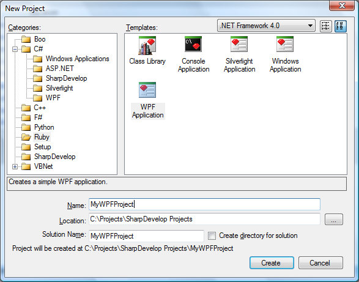
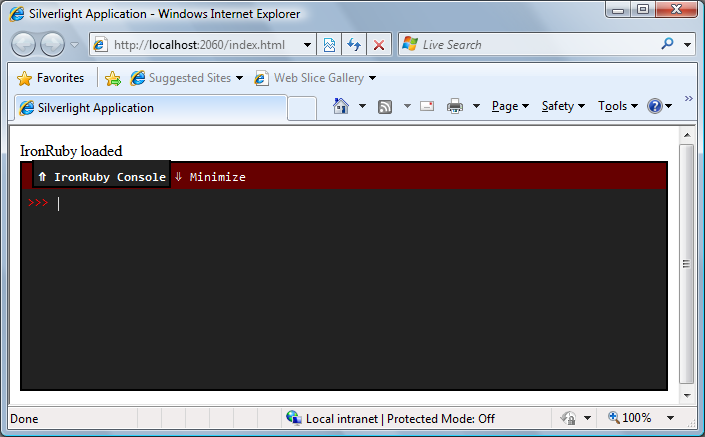
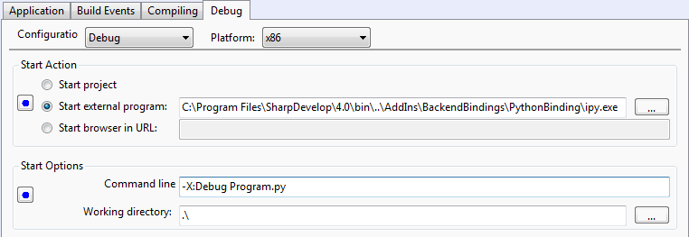

SharpDevelop 4.0 now includes templates to create WPF and Silverlight applications for IronRuby and IronPython.

The WPF template will create a basic WPF application that loads its main window from disk by using XamlReader.Load and then displays it.
The Silverlight template will create a basic Silverlight project with an IronPython or IronRuby script file and a web page. The web page (index.html) will open up the IronPython or IronRuby console in the browser and run the script. The script file does not do much apart from change the text in the browser.
On running the Silverlight project SharpDevelop will launch Chiron and allow you to browse to the project's web page. Chiron is an application that can be used as a personal web server to host your silverlight application. It can also be used to package up your Silverlight application ready for deployment.

All the existing IronPython project templates have also changed. When a new IronPython project is run, by selecting the menu item Debug | Run, it will now run the IronPython console (ipy.exe) instead of starting the project's executable. This change makes IronPython projects consistent with IronRuby projects. It also means you can debug a new IronPython application straight away without having to change the project options.
To switch back to the previous behaviour, and launch the project's executable instead of ipy.exe, change the Start Action in the project options to Start project. Note that debugging the project's executable is not supported.
The screenshot below shows the project options for a new IronPython project.

For more information on writing Silverlight applications in IronPython and IronRuby see the following web sites.